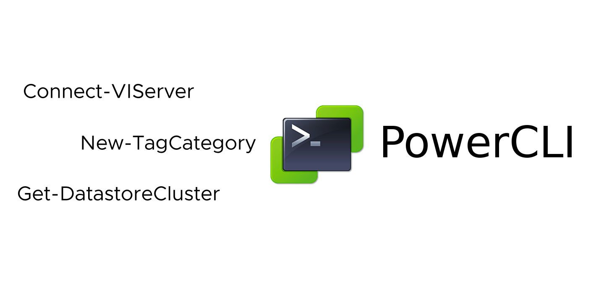

Use vCenter TAGs to maintain VM Storage Placement

Use vCenter TAGs to maintain VM Storage Placement.
A question was recently asked, How can we specify and maintain which DataStore Cluster a VM should use within the VMware vCenter UI? I like using vCenter TAGs for specifying details about VMs, so I thought I would use VMware vCenter TAGs to specify which DataStore Cluster to place a VM.
I looked at using a Configuration management tool like salt but one of the requirements was to make it easy for the VMware Admin to specify and maintain VM DataStore placement within the VMware vCenter UI.
I have included sample code that will:
- Create a VMware vCenter TAG Category
- Create a VMware vCenter TAG based on DataStore Cluster Name
- Add the DataStore Cluster VMware vCenter TAG to all VMs within a DataStore cluster
- Verify that each VM has only (1) vCenter DataStore Cluster TAG
- Verify that the VM is in the correct DataStore Cluster. Do a VM move if it is not in correct DataStore Cluster.
Use Case:
- [x] Have a way to specify which DataStore Cluster the VM will use within VMware vCenter UI.
- [x] Have a process in place that will maintain which DataStore Cluster will be used with each VM within VMware vCenter.
- [x] If a user moves a VM to a DataStore Cluster that it shouldn't be located, move it back to the correct Datastore Cluster to match the assigned VMware vCenter TAG.
Solution:
- [x] Create a VMware vCenter TAG for every DataStore Cluster within VMware vCenter.
- [x] Assign a VMware vCenter TAG to every VM within vCenter, to specify which DataStore Cluster it should be located.
- [x] Schedule a VMware Aria Automation Orchestrator Workflow to run everyday to make sure VM DataStore Cluster placement matches VMware vCenter TAG assigned.
Steps to connect to VMware vCenter:
# Script created by: Dale Hassinger
# Script provided for Demo Use Only
# Date: 2023-01-27
# Purpose: Create and Assign vCenter TAGs to be used for VM Storage placement
# Notes: VMs with ISOs attached and Snap Shots may be listed in more than 1 Datastore Cluster
# In my lab I made sure there were no SNAPs or ISOs attached before applying TAGs with Automation
# ----- [ Connect to vCenter ] -----
Connect-VIServer -Server 'vCenter.vCROCS.info' -User 'administrator@vCROCS.info' -Password 'HackMe1!' -Force
Code to create a VMware vCenter TAG Category:
- For any custom VMware vCenter TAGs that I create to use with Automation, I use a TAG category "Automation".
- You don't need to do this step. You could use a category that already exists within VMware vCenter.
# ----- [ Start Create vCenter TAG Category ] -----
# New TAG Category Name
$newCategory = 'Automation'
# Get all existing vCenter TAG Categories
$allCategory = Get-TagCategory
# Check to see if category already exists
$allCategory = $allCategory.Name
$categoryExists = $allCategory.Contains($newCategory)
# If TAG category already exists it will not try to re-create
if($categoryExists -eq $true){
Write-Output 'Category Already exists within vCenter!'
} # End if
else{
$output = 'Creating New Category within vCenter: ' + $newCategory
Write-Output $output
# Create New TAG Category in vCenter
New-TagCategory -Name $newCategory -Cardinality Multiple -Description 'Used with Automation'
} # End Else
# ----- [ End Create vCenter TAG Category ] -----
Code to create a VMware vCenter TAG for every Datastore Cluster:
- The code gets all DataStore Cluster Names and creates a VMware vCenter TAG to match DataStore Cluster Name. I prefix the DataStore Cluster Name with "TAG-VM-".
- The code does check to see if the VMware vCenter TAG already exists. If the vCenter TAG does exist, it does not try and create a new vCenter TAG.
- include code to connect to vCenter
# ----- [ Start Create vCenter TAG for every Datastore Cluster ] -----
# New TAG Category Name
$newCategory = 'Automation'
$allDatastoreClusters = Get-DatastoreCluster
$allDatastoreClusters = $allDatastoreClusters.Name
$allTAGs = Get-Tag
$allTAGs = $allTAGs.Name
$newTAGs = @()
# Create new TAG Names
foreach($newTAG in $allDatastoreClusters){
$newTAGname = 'TAG-VM-' + $newTAG
$output = 'New TAG Name: ' + $newTAGname
Write-Output $output
$newTAGs+= $newTAGname
} # end foreach
# Add TAGs to vCenter if they don't already exist
foreach($newTAG in $newTAGs){
# Check to see if category already exists
$TagExists = $allTAGs.Contains($newTAG)
if($TagExists -eq $true){
$output = 'Tag ' + $newTAG + ' already Exists: ' + $TagExists
Write-Output $output
} # end if
else{
$output = 'Tag ' + $newTAG + ' Exists: ' + $TagExists
Write-Output $output
# Create New TAG
Get-TagCategory -Name $newCategory | New-Tag -Name $newTAG -Description 'VM Storage TAG used with Automation'
} # end else
} # end foreach
# ----- [ End Create vCenter TAG for every Datastore Cluster ] -----
Code to add DataStore Cluster vCenter TAG to VMs for a specific Datastore Cluster:
- You specify DataStore Cluster Name. The code with get all VM names and assign the correct VMware vCenter TAG. It will check to see if TAG is already assigned to the VM.
- include code to connect to vCenter
# ----- [ Start add Storage vCenter TAG to VMs for a specific DataStore Cluster ] -----
$datastoreCluster = 'DS-CLSTR-03'
#$datastoreCluster = 'DS-CLSTR-04'
$TAGname = 'TAG-VM-' + $datastoreCluster
$allVMs = Get-DatastoreCluster -Name $datastoreCluster | Get-VM
$allVMs = $allVMs.Name
foreach($vm in $allVMs){
# Get existing TAGs assigned to VM
#$assignedTAGs = ''
$assignedTAGs = Get-VM $vm | Get-TagAssignment
$assignedTAGs = $assignedTAGs.Tag.Name
if(!$assignedTAGs){
$output = 'VM: ' + $vm + ' has no tags'
Write-Output $output
New-TagAssignment -Tag $TAGname -Entity $vm
} # end if
else{
$TagExists = $assignedTAGs.Contains($TAGname)
if($TagExists -eq $false){
New-TagAssignment -Tag $TAGname -Entity $vm
$output = 'Assigned TAG: ' + $TAGname + ' to VM: ' + $vm
Write-Output $output
} # end if
else{
$output = 'TAG: ' + $TAGname + ' already assigned to VM: ' + $vm
Write-Output $output
}
} # end else
} # end foreach
# ----- [ End add Storage vCenter TAG to VMs for a specific DataStore Cluster ] -----
Code to Verify that each VM only has (1) DataStore Cluster TAG assigned:
- The code looks to see if one than (1) DataStore Cluster TAG is assigned.
- If a VM has an iso mounted from a 2nd Datastore that could make (2) TAGs get assigned.
- If a VM was located on a DataStore Cluster and had a SNAP Shot and was moved to a 2nd DataStore Cluster, it could get (2) DataStore Cluster TAGs assigned until the SNAP is Deleted.
- For this use case, I ONLY want (1) Datastore Cluster to be used per VM.
- include code to connect to vCenter
# ----- [ Start Verify that VM has only (1) DS Cluster TAG ] -----
$allVMs = Get-VM
$allVMs = $allVMs.Name
$allVMs = $allvms | Sort-Object
Write-Output 'Starting TAG count check...'
foreach($vm in $allVMs){
$assignedTAGs = Get-VM $vm | Get-TagAssignment
$assignedTAGs = $assignedTAGs.Tag.Name
$assignedTAGs = $assignedTAGs | Where-Object {$_ -like 'TAG-VM-DS-CLSTR-*'}
$tagCount = $assignedTAGs.count
if($tagCount -gt 1){
$output = 'VM: ' + $vm + ' has more than 1 DS Cluter Tag Assigned!'
Write-Output $output
} # end if
} # End foreach
Write-Output 'TAG count check complete'
# ----- [ End Verify that VM has only (1) DS Cluster TAG ] -----
Code to verify that each VM is located in the correct DataStore Cluster based in vCenter TAG:
- The code gets all the DataStore Cluster VMware vCenter TAGs.
- The code then gets all VMs assigned a TAG and verifies that the VM is located in the correct DataStore Cluster.
- If the VM is NOT located in the DataStore Cluster that matches the vCenter TAG, it moves the VM to the correct DataStore Cluster.
- include code to connect to vCenter
# ----- [ Start Verify that VM is in correct DS Cluster based in TAG ] -----
$newCategory = 'Automation'
$allTAGs = Get-Tag
$allTAGs = $allTAGs.Name
$allTAGs = $allTAGs | Where-Object {$_ -like 'TAG-VM-DS-CLSTR-*'} | Sort-Object
foreach($tag in $allTAGs){
$output = '--- TAG: ' + $tag
Write-Output $output
$dsCluster = $tag
$dsCluster = $dsCluster.replace('TAG-VM-','')
$tagfilter = $newCategory + '/' + $tag
$vmList = Get-TagAssignment | Where-Object {$_.Tag -like $tagfilter}
$vmList = $vmList.Entity.Name | Sort-Object
foreach($vm in $vmlist){
$currentDSCluster = Get-VM $vm | Get-DatastoreCluster
$currentDSCluster = $currentDSCluster.Name
if($currentDSCluster -eq $dsCluster){
$output = 'Already in DS Cluster: ' + $dsCluster + ' - VM: ' + $vm
Write-Output $output
} # end if
else{
$output = '*Moving to DS Cluster: ' + $dsCluster + ' - VM: ' + $vm
Write-Output $output
Move-VM -VM $vm -Datastore $dsCluster
} # End else
} # End foreach
} # end foreach
# ----- [ End Verify that VM is in correct DS Cluster based in TAG ] -----
Code to Disconnect CD from all VMs:
- include code to connect to vCenter
- Before I assigned the vCenter TAGs to the VMs using a script to automate the process, I made sure that none of the VMs had a SNAP or a iso attached. Here is the code to disconnect all iso images mounted to a VM.
# Code Disconnect CD from all VMs
Get-VM | Where-Object {$_.PowerState –eq “PoweredOn”} | Get-CDDrive | Set-CDDrive -NoMedia -Confirm:$False
Lessons Learned
- You can use this code to maintain VM placement, but you could also use this code to move VMs to new DatStore Clusters. Assign a new TAG to the VM and the process will do a Storage vMotion for you. Great way to move VMs if you get a new SAN.
- I located the VM based on DataStore Cluster. You could change code slightly and specify a specific DataStore.
- If there is a member on your VMware Team that changes which DataStore Cluster a VM should be located for no reason, you could also fix the issue by giving that Team Member 30 days in the electric chair so they don't do it again. :)
When I write about vRealize Aria Automation, I always say there are many ways to accomplish the same task. This article is just one way that you could accomplish this task. I am showing what I felt was a good way to complete the use case but every organization/environment will be different. There is no right or wrong way to complete automation as long as it completes successfully and consistently.